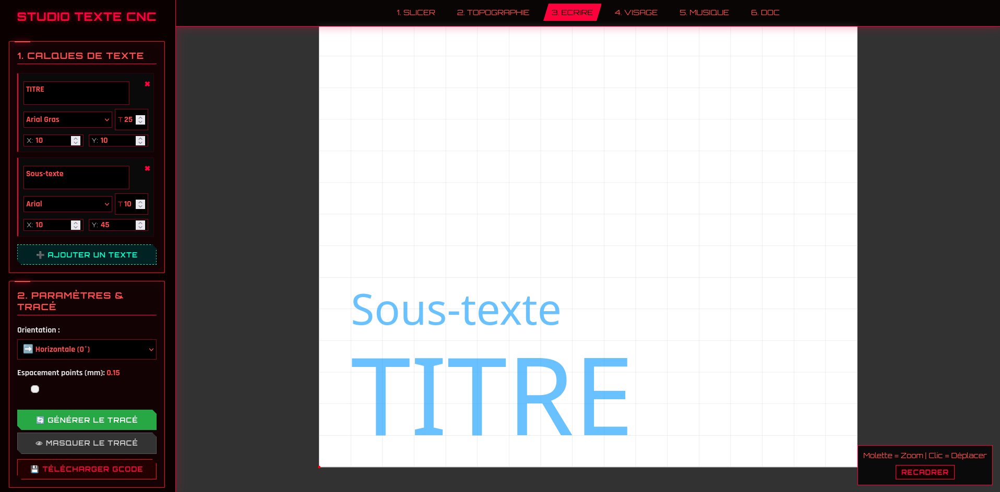

Module 3 : Le Studio Texte CNC (Word)
Le Studio Texte CNC transforme la machine en une véritable machine à écrire. Ce module fonctionne comme un éditeur de texte vectoriel permettant de composer, superposer et orienter plusieurs blocs de texte pour générer automatiquement les trajectoires du stylo.

1. Gestion des Calques de Texte
Pour offrir une flexibilité totale, l'interface repose sur un système de calques dynamiques. L'utilisateur peut ajouter autant de blocs de texte qu'il le souhaite via le bouton "Ajouter un texte". Chaque calque est traité comme un objet indépendant possédant ses propres paramètres :
- Saisie multi-lignes : Une zone de texte permettant d'écrire des paragraphes entiers. Le code gère automatiquement les sauts de ligne avec un interlignage proportionnel (110% de la taille de la police).
- Choix de la typographie : L'utilisateur peut sélectionner différentes graisses et styles (Arial standard, Bold, Italic, Black).
- Taille et Positionnement : Taille de police ajustable (T) et coordonnées (X, Y) au millimètre près pour placer précisément le bloc sur le plateau de 170x140 mm.
2. La Conversion Vectorielle (textToPoints)
Dessiner du texte avec un stylo est un défi complexe car une machine ne comprend pas les "pixels" d'une police d'écriture. Voici comment le logiciel procède "sous le capot" :
- Chargement asynchrone des polices (TTF) : Le script charge dynamiquement de véritables fichiers de polices (
.TTF) dans le cache du navigateur. - Mode Aperçu (Bleu) : Tant que l'utilisateur modifie ses textes, le programme utilise le moteur de rendu natif de p5.js pour afficher un aperçu bleu rapide et léger, sans faire ralentir l'ordinateur.
- Extraction des contours : Lors du clic sur "Générer le tracé", le script utilise la fonction
textToPoints()de p5.js. Cette fonction scanne la géométrie mathématique de la police et en extrait une liste brute de milliers de points (x, y) qui forment le contour exact de chaque lettre. Le tracé apparaît alors en rouge (Mode Tracé).
3. Opérations Mathématiques et Optimisation
Pour garantir un résultat parfait à la machine, le script applique deux traitements mathématiques majeurs sur ces points bruts :
- Matrice de Rotation (Trigonométrie) : Pour gérer l'orientation globale du texte (0°, 90°, -90°, 180°), le programme n'utilise pas de simple rotation d'image. Il recalcule les coordonnées de chaque point un par un en appliquant une formule trigonométrique utilisant le cosinus (
cosA) et le sinus (sinA) par rapport à un point de pivot. Cela permet de générer un G-Code parfaitement aligné avec la mécanique. - Filtrage spatial (Espacement des points) : La fonction
textToPointsgénère souvent beaucoup trop de points, ce qui fait "bégayer" la machine. Un algorithme de nettoyage calcule la distance entre chaque point généré (dist()). Si deux points sont plus proches que la règle d'espacement (ex: 0.15 mm), le point est supprimé. Ce nettoyage intelligent allège le fichier G-Code final tout en gardant des courbes fluides.
4. Génération G-Code et Exécution
Une fois les chemins optimisés, le script boucle sur chaque lettre pour générer le G-Code. Le stylo se lève (M3 S33), se déplace rapidement (G0) au début d'une lettre, se baisse (M3 S0), puis trace le contour (G1) à la vitesse configurée (F1500). L'envoi se fait de manière asynchrone via la technologie Web Serial, avec une barre de progression en direct.